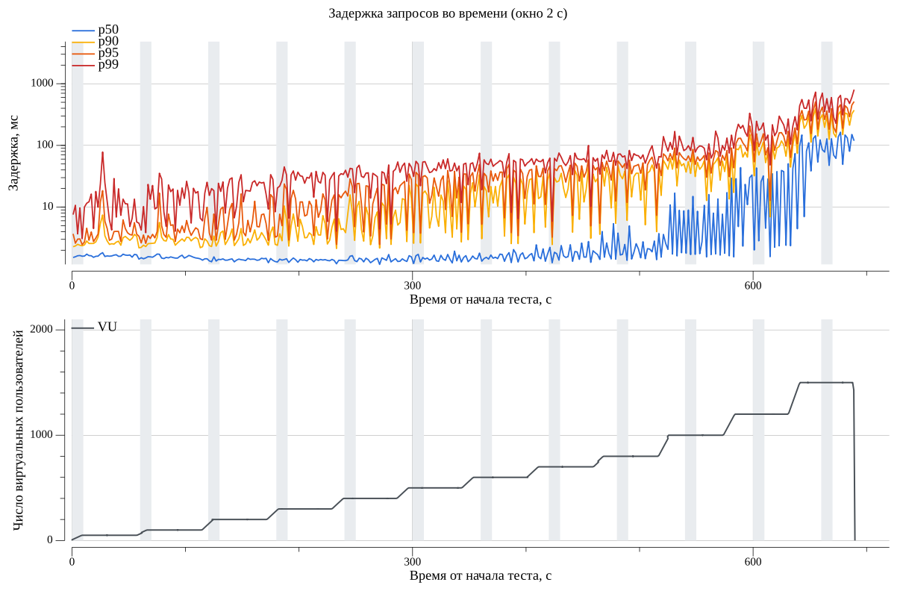
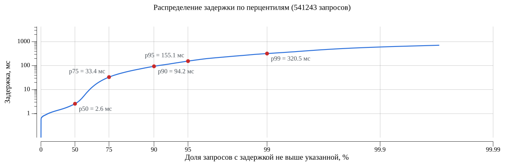
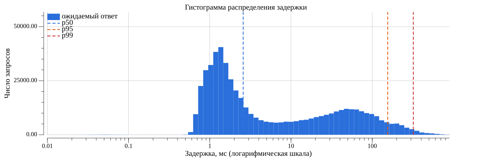
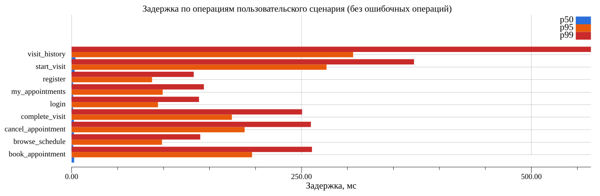
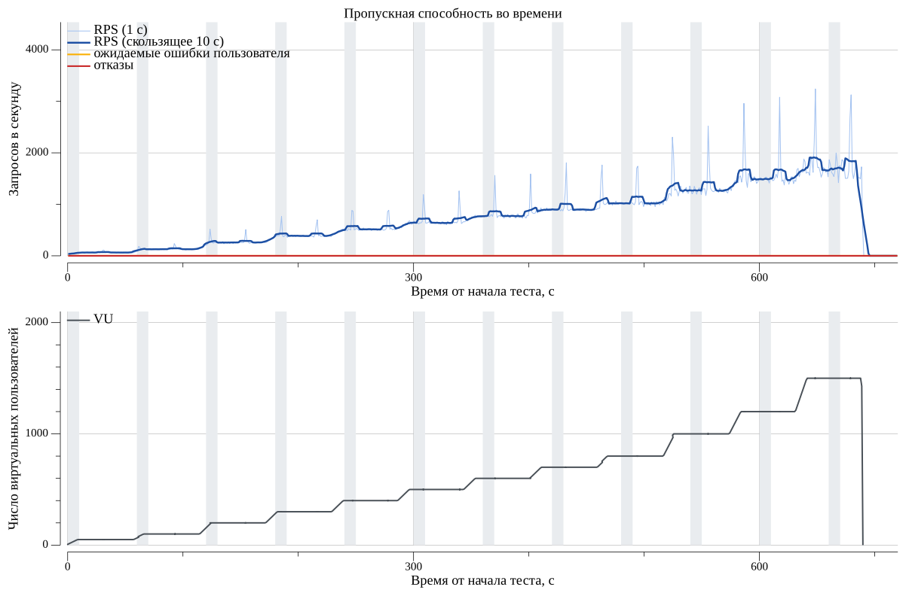
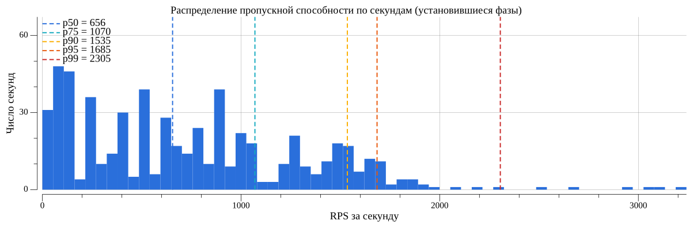
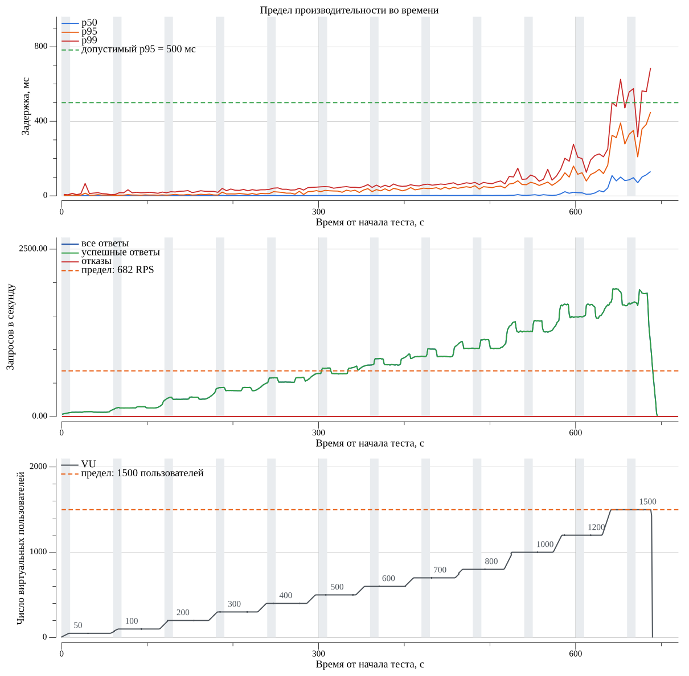
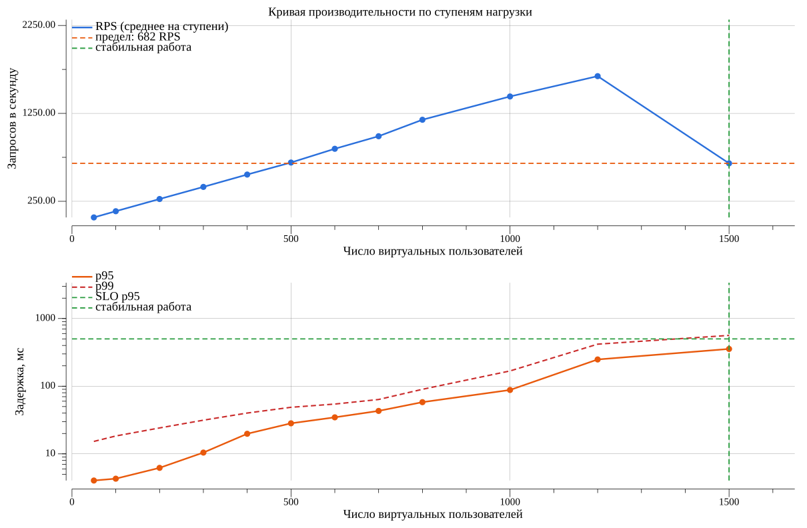
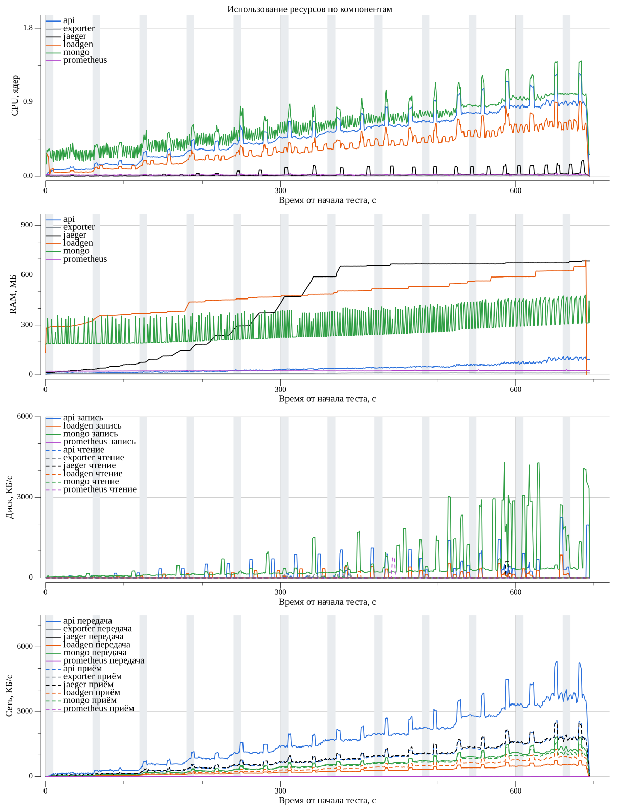

Ступенчатое увеличение нагрузки
Запросов541235
RPS среднее / медиана752 / 664
p50 / p95 задержки2.58 / 155 мс
p99 задержки320 мс
Отказы0.00%
Ошибочные операции0.00%
Стабильная работа до 1500 VU (~682 RPS). Нарушение SLO начинается с не найдена в пределах теста. Максимальная пропускная способность 1673 RPS при 1200 VU.
Задержка
| Задержка, мс | count | min | mean | p50 | p75 | p90 | p95 | p99 | max |
|---|---|---|---|---|---|---|---|---|---|
| Все запросы | 541235 | -1360 | 31.5 | 2.58 | 33.4 | 94.2 | 155 | 320 | 886 |
| Корректные операции | 541235 | -1360 | 31.5 | 2.58 | 33.4 | 94.2 | 155 | 320 | 886 |
| Ошибочные операции | 0 | — | — | — | — | — | — | — | — |



Операции пользовательского сценария
| Операция | count | min | mean | p50 | p75 | p90 | p95 | p99 | max | Отказы | Ошибочные |
|---|---|---|---|---|---|---|---|---|---|---|---|
| book_appointment | 78598 | 0.03 | 34.8 | 2.75 | 40.5 | 116 | 196 | 261 | 407 | 0.00% | 0.00% |
| browse_schedule | 78709 | 0.02 | 19.4 | 1.73 | 24.3 | 66.8 | 98.3 | 140 | 214 | 0.00% | 0.00% |
| cancel_appointment | 23443 | 0.02 | 33.1 | 2.52 | 38.1 | 108 | 188 | 260 | 415 | 0.00% | 0.00% |
| complete_visit | 54550 | 0.02 | 31.4 | 2.44 | 37.3 | 98.7 | 174 | 251 | 404 | 0.00% | 0.00% |
| login | 78738 | -1360 | 18.7 | 1.51 | 23.8 | 63.9 | 93.9 | 139 | 255 | 0.00% | 0.00% |
| my_appointments | 78408 | 0.02 | 19.0 | 1.67 | 22.9 | 65.0 | 99.0 | 144 | 248 | 0.00% | 0.00% |
| register | 16280 | 0.04 | 17.4 | 1.54 | 21.2 | 59.9 | 87.5 | 133 | 212 | 0.00% | 0.00% |
| start_visit | 54746 | 0.02 | 47.2 | 3.31 | 51.3 | 158 | 277 | 372 | 550 | 0.00% | 0.00% |
| visit_history | 77771 | 0.02 | 57.5 | 4.27 | 57.1 | 185 | 306 | 565 | 886 | 0.00% | 0.00% |

Пропускная способность
| Показатель | count | min | mean | p50 | p75 | p90 | p95 | p99 | max |
|---|---|---|---|---|---|---|---|---|---|
| RPS за секунду | 720 | 0.00 | 752 | 664 | 1095 | 1532 | 1681 | 2182 | 3241 |


Фазы нагрузки
| Участок | VU | RPS ср. | RPS p50 | RPS p5 | p50 мс | p95 мс | p99 мс | Отказы | CPU api | CPU mongo | RAM api, МБ | SLO |
|---|---|---|---|---|---|---|---|---|---|---|---|---|
| разгон до 50 | 50 | 44.9 | 45.5 | 23.5 | 1.59 | 2.82 | 7.28 | 0.00% | 0.05 | 0.26 | 8.18 | да |
| 50 VU | 50 | 66.6 | 64.5 | 57.5 | 1.63 | 4.04 | 15.3 | 0.00% | 0.08 | 0.27 | 10.9 | да |
| разгон до 100 | 100 | 133 | 128 | 101 | 1.52 | 2.97 | 10.9 | 0.00% | 0.13 | 0.33 | 12.7 | да |
| 100 VU | 100 | 137 | 130 | 118 | 1.53 | 4.30 | 18.4 | 0.00% | 0.14 | 0.31 | 13.4 | да |
| разгон до 200 | 200 | 284 | 258 | 218 | 1.38 | 3.91 | 18.4 | 0.00% | 0.25 | 0.41 | 17.1 | да |
| 200 VU | 200 | 276 | 262 | 242 | 1.40 | 6.21 | 24.2 | 0.00% | 0.25 | 0.39 | 18.0 | да |
| разгон до 300 | 300 | 439 | 392 | 372 | 1.39 | 11.2 | 33.3 | 0.00% | 0.36 | 0.50 | 21.4 | да |
| 300 VU | 300 | 414 | 389 | 373 | 1.37 | 10.5 | 31.5 | 0.00% | 0.34 | 0.46 | 22.7 | да |
| разгон до 400 | 400 | 582 | 514 | 493 | 1.48 | 18.5 | 38.1 | 0.00% | 0.44 | 0.57 | 26.7 | да |
| 400 VU | 400 | 554 | 524 | 496 | 1.40 | 19.8 | 40.1 | 0.00% | 0.43 | 0.54 | 27.9 | да |
| разгон до 500 | 500 | 730 | 642 | 625 | 1.44 | 26.9 | 48.9 | 0.00% | 0.49 | 0.60 | 33.1 | да |
| 500 VU | 500 | 691 | 659 | 624 | 1.46 | 28.3 | 48.8 | 0.00% | 0.51 | 0.62 | 34.9 | да |
| разгон до 600 | 600 | 783 | 775 | 763 | 1.47 | 28.1 | 54.3 | 0.00% | 0.54 | 0.64 | 39.1 | да |
| 600 VU | 600 | 847 | 806 | 733 | 1.55 | 34.7 | 54.5 | 0.00% | 0.59 | 0.70 | 40.2 | да |
| разгон до 700 | 700 | 898 | 902 | 873 | 1.56 | 40.3 | 61.2 | 0.00% | 0.61 | 0.70 | 42.4 | да |
| 700 VU | 700 | 990 | 914 | 880 | 1.71 | 43.1 | 63.6 | 0.00% | 0.66 | 0.76 | 45.5 | да |
| разгон до 800 | 800 | 1020 | 1019 | 1001 | 1.85 | 48.0 | 67.7 | 0.00% | 0.67 | 0.76 | 49.4 | да |
| 800 VU | 800 | 1177 | 1060 | 982 | 2.19 | 58.1 | 90.0 | 0.00% | 0.74 | 0.84 | 52.4 | да |
| разгон до 1000 | 1000 | 1264 | 1275 | 1193 | 2.65 | 66.8 | 102 | 0.00% | 0.77 | 0.86 | 60.2 | да |
| 1000 VU | 1000 | 1442 | 1341 | 1235 | 6.37 | 87.9 | 168 | 0.00% | 0.85 | 0.95 | 64.4 | да |
| разгон до 1200 | 1200 | 1495 | 1506 | 1440 | 16.5 | 120 | 202 | 0.00% | 0.85 | 0.94 | 72.6 | да |
| 1200 VU | 1200 | 1673 | 1610 | 1422 | 44.3 | 248 | 418 | 0.00% | 0.92 | 1.03 | 82.3 | да |
| разгон до 1500 | 1500 | 1699 | 1700 | 1475 | 90.8 | 341 | 572 | 0.00% | 0.88 | 1.00 | 99.0 | да |
| 1500 VU | 1500 | 682 | 0.00 | 0.00 | 100 | 355 | 563 | 0.00% | 0.83 | 0.97 | 96.6 | да |
Поиск предела производительности


Использование ресурсов
| Компонент | Метрика | min | max | mean | median | p95 |
|---|---|---|---|---|---|---|
| api | CPU, ядер | 0.01 | 1.25 | 0.51 | 0.54 | 0.91 |
| api | Троттлинг CPU, с/с | 0.00 | 0.14 | 0.01 | 0.00 | 0.05 |
| api | Чтение с диска, КБ/с | 0.00 | 165 | 2.31 | 0.00 | 0.00 |
| api | Запись на диск, КБ/с | 0.00 | 2254 | 140 | 0.00 | 894 |
| api | RAM (working set), МБ | 3.99 | 111 | 40.1 | 36.7 | 91.7 |
| api | Сеть, приём КБ/с | 0.05 | 2578 | 805 | 738 | 1794 |
| api | Сеть, передача КБ/с | 0.11 | 5322 | 1712 | 1570 | 3778 |
| api | Процессы и потоки | 7.00 | 16.0 | 8.91 | 9.00 | 10.0 |
| exporter | CPU, ядер | 0.00 | 0.01 | 0.00 | 0.00 | 0.01 |
| exporter | Троттлинг CPU, с/с | 0.00 | 0.00 | 0.00 | 0.00 | 0.00 |
| exporter | Чтение с диска, КБ/с | 0.00 | 157 | 5.45 | 0.00 | 50.1 |
| exporter | Запись на диск, КБ/с | 0.00 | 0.00 | 0.00 | 0.00 | 0.00 |
| exporter | RAM (working set), МБ | 3.22 | 11.9 | 9.42 | 9.51 | 11.6 |
| exporter | Сеть, приём КБ/с | 0.50 | 0.81 | 0.57 | 0.54 | 0.75 |
| exporter | Сеть, передача КБ/с | 3.44 | 6.52 | 4.87 | 4.67 | 6.41 |
| exporter | Процессы и потоки | 4.00 | 6.00 | 5.51 | 6.00 | 6.00 |
| jaeger | CPU, ядер | 0.00 | 0.19 | 0.03 | 0.01 | 0.12 |
| jaeger | Троттлинг CPU, с/с | 0.00 | 0.00 | 0.00 | 0.00 | 0.00 |
| jaeger | Чтение с диска, КБ/с | 0.00 | 620 | 3.57 | 0.00 | 0.00 |
| jaeger | Запись на диск, КБ/с | 0.00 | 0.00 | 0.00 | 0.00 | 0.00 |
| jaeger | RAM (working set), МБ | 12.9 | 687 | 429 | 591 | 676 |
| jaeger | Сеть, приём КБ/с | 0.00 | 2501 | 822 | 759 | 1790 |
| jaeger | Сеть, передача КБ/с | 0.00 | 4.98 | 1.72 | 1.69 | 3.49 |
| jaeger | Процессы и потоки | 6.00 | 8.00 | 7.59 | 8.00 | 8.00 |
| loadgen | CPU, ядер | 0.00 | 0.91 | 0.35 | 0.34 | 0.66 |
| loadgen | Троттлинг CPU, с/с | 0.00 | 0.00 | 0.00 | 0.00 | 0.00 |
| loadgen | Чтение с диска, КБ/с | 0.00 | 228 | 1.67 | 0.00 | 0.00 |
| loadgen | Запись на диск, КБ/с | 0.00 | 844 | 49.0 | 0.00 | 329 |
| loadgen | RAM (working set), МБ | 0.00 | 693 | 478 | 485 | 626 |
| loadgen | Сеть, приём КБ/с | 0.00 | 1268 | 383 | 344 | 885 |
| loadgen | Сеть, передача КБ/с | 0.00 | 749 | 251 | 235 | 544 |
| loadgen | Процессы и потоки | 0.00 | 9.00 | 8.53 | 9.00 | 9.00 |
| mongo | CPU, ядер | 0.15 | 1.40 | 0.64 | 0.63 | 1.00 |
| mongo | Троттлинг CPU, с/с | 0.01 | 1.20 | 0.27 | 0.20 | 0.87 |
| mongo | Чтение с диска, КБ/с | 0.00 | 131 | 2.20 | 0.00 | 3.33 |
| mongo | Запись на диск, КБ/с | 17.0 | 4287 | 525 | 204 | 2859 |
| mongo | RAM (working set), МБ | 188 | 480 | 288 | 255 | 452 |
| mongo | Сеть, приём КБ/с | 0.11 | 1555 | 506 | 466 | 1101 |
| mongo | Сеть, передача КБ/с | 0.05 | 1833 | 552 | 507 | 1258 |
| mongo | Процессы и потоки | 39.0 | 153 | 89.6 | 88.0 | 148 |
| prometheus | CPU, ядер | 0.01 | 0.03 | 0.02 | 0.02 | 0.02 |
| prometheus | Троттлинг CPU, с/с | 0.00 | 0.00 | 0.00 | 0.00 | 0.00 |
| prometheus | Чтение с диска, КБ/с | 0.00 | 742 | 4.27 | 0.00 | 0.00 |
| prometheus | Запись на диск, КБ/с | 0.00 | 7.00 | 0.79 | 0.00 | 5.00 |
| prometheus | RAM (working set), МБ | 22.1 | 31.2 | 25.1 | 24.3 | 27.6 |
| prometheus | Сеть, приём КБ/с | 3.90 | 6.52 | 4.88 | 4.67 | 6.41 |
| prometheus | Сеть, передача КБ/с | 0.50 | 0.84 | 0.57 | 0.54 | 0.75 |
| prometheus | Процессы и потоки | 8.00 | 14.0 | 8.06 | 8.00 | 8.00 |

Коды ответов
| Код | Запросов |
|---|---|
| 200 | 391614 |
| 201 | 149621 |
Окружение прогона
| Компонент | Логические CPU | Квота CPU | Резерв RAM, МБ | Лимит RAM, МБ | Образ | ID образа |
|---|---|---|---|---|---|---|
| api | 0,1 | 1 | 512 | 512 | vitaline-lab6-api:20261124-223213-ramp-q4k5 | 34bab9a88d5d |
| exporter | 6,7 | — | 64 | 64 | vitaline-lab4-exporter:1 | 5d8e679d55a3 |
| jaeger | 6,7 | — | 1536 | 1536 | jaegertracing/jaeger:2.11.0 | b585df1b6299 |
| loadgen | 4,5 | — | 2048 | 2048 | grafana/k6:1.3.0 | 3ddc8b1a33a2 |
| mongo | 2,3 | 1 | 1024 | 1024 | mongo:7 | 41e8195b2791 |
| prometheus | 6,7 | — | 768 | 768 | prom/prometheus:v3.5.0 | 63805ebb8d2b |